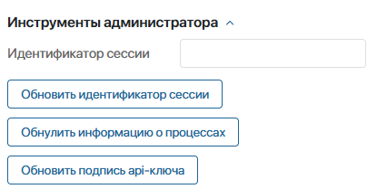
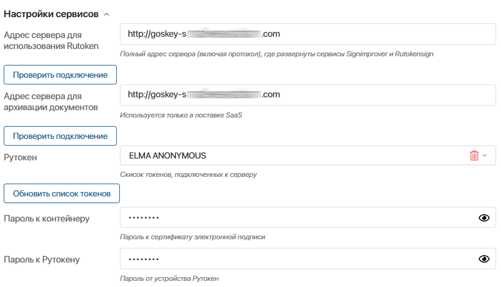
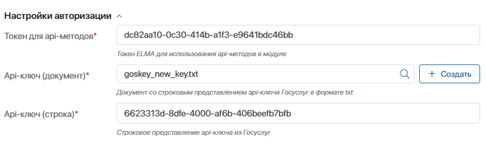
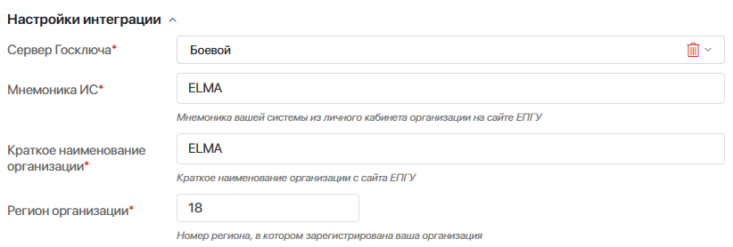
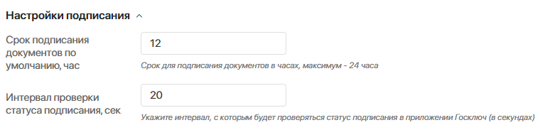

После установки бизнес-решения Интеграция с Госключом в разделе Администрирование > Модули добавится одноимённый модуль. Он содержит преднастроенные процессы и методы API, с помощью которых реализуется интеграция. Администратор системы не работает с этими процессами и методами. Ниже представлена ознакомительная информация о процессах модуля:
- Отправить документы на подписание в Госключ — запускается, если в задаче подписания документа выбрать Госключ как провайдера электронной подписи и нажать кнопку Отправить в Госключ;
- Обновление подписи api-ключа — отправляет запрос в сервис rutokensign и обновляет подпись к API-ключу. Запускается по расписанию ежедневно в 23:00 по времени компании, т. к. в Госуслугах есть требование к сроку подписи API-ключа не более 24 часов. Также этот процесс запускается вручную при первичной настройке модуля;
Настроить модуль интеграции с Госключом
Заполните поля настроек модуля в следующих блоках:
- Инструменты администратора.
- Настройки сервисов.
- Настройки авторизации.
- Настройки интеграции.
- Настройки подписания.
Инструменты администратора
В этом блоке обновите подпись к API-ключу. Другие настройки блока предназначены для решения нестандартных ситуаций в случае возникновения ошибок:

- Идентификатор сессии — если идентификатор текущего подключения к Госключу утерян из-за ошибки сервиса, вы можете заново задать его значение, чтобы восстановить подключение. Для этого нажмите кнопку Обновить идентификатор сессии и вставьте сгенерированное значение в поле Идентификатор сессии;
- Обнулить информацию о процессах — служебная опция. Позволяет очистить хранилище
Namespace.storageна сервере, в котором содержатся данные о текущих процессах подписания в Госключе; - Обновить подпись api-ключа — позволяет при первичной настройке модуля вручную запустить процесс обновления подписи к API-ключу. Далее такой процесс по умолчанию запускается ежедневно в 23:00 с учётом часового пояса компании.
Настройки сервисов
Здесь настройте интеграцию с сервисами решения, установленными на сервер.
Обратите внимание, поля с паролями к сертификату электронной подписи и к Рутокену в этом блоке доступны только сотруднику, назначенному на роль Ответственный за Госключ:

- Адрес сервера для использования Rutoken — введите адрес сервера, на котором установлены сервисы rutokensign и signimprover. Затем нажмите кнопку Проверить подключение и дождитесь уведомления о результате.
- Адрес сервера для архивации документов — если вы используете поставку SaaS, укажите в этом поле адрес сервера, на котором установлен сервис node-jszip. Затем нажмите кнопку Проверить подключение и дождитесь уведомления о результате. Для поставки On-Premises заполнять поле не нужно;
- Рутокен — чтобы отобразить доступные варианты в этом поле, нажмите Обновить список токенов. Затем выберите токен, подключённый к серверу, на котором установлены сервисы rutokensign и signimprover.
Следующие поля доступны для просмотра и редактирования только сотруднику, назначенному на роль Ответственный за Госключ;
- Пароль к контейнеру — введите пароль к сертификату, который хранится в устройстве Рутокена;
- Пароль к Рутокену — укажите пароль к устройству Рутокена.
Настройки авторизации
В этом блоке выполните настройки для использования методов Web API и полученного API-ключа:

- Токен для api-методов* — введите токен для использования внутреннего WebAPI;
- Api-ключ (документ)* — выберите элемент приложения API-ключи, созданный ответсвенным за Госключ после получения API-ключа;
- Api-ключ (строка)* — вставьте строковое значение полученного API-ключа.
Настройки интеграции
В этом блоке заполните поля для интеграции с сервером Госключа:

- Сервер Госключа* — выберите Тестовый или Боевой;
- Мнемоника ИС* — введите значение мнемоники вашей системы на странице портала Госуслуг;
- Краткое наименование организации* — введите значение, указанное на странице портала Госуслуг;
- Регион организации* — укажите регион регистрации организации.
Настройки подписания
Здесь укажите настройки для подписания документов:

- Срок подписания документов по умолчанию, час — задайте максимально возможный срок в часах, в течение которого сотрудник может подписать документы в приложении. Этот срок отобразится в задаче подписания после отправки документов в Госключ. Время рассчитывается с момента поступления уведомления в приложении о подписании документов и не может превышать 24 часа;
- Интервал проверки статуса подписания, сек — задайте период в секундах для проверки подписания документов в Госключе. Используется в виджетах подписания документов.
Сохраните настройки модуля. После этого пользователь может подписать документы через Госключ.